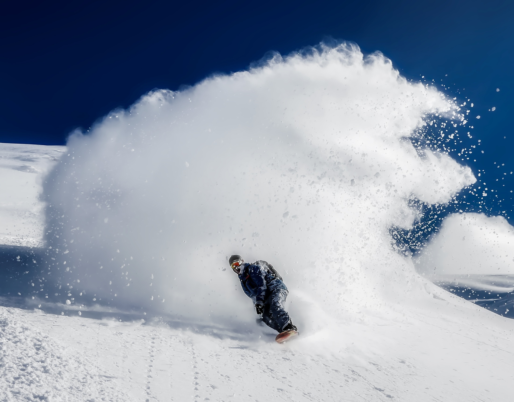

What I Like About Snowboarding
Snowboarding is one of my favorite hobbies because it is both exciting and challenging. I like the feeling of riding down the mountain, improving my balance, and getting better each time I go. It is also a good way to stay active and enjoy the outdoors.
Why Snowboarding Is Fun
One reason I enjoy snowboarding is because every trip feels different. Weather conditions, snow quality, and trail difficulty can all change the experience. It is also fun to keep practicing and learning how to ride more smoothly and confidently.
- It is a fun way to exercise
- It helps improve balance and coordination
- I enjoy being outside in the mountains
- It is exciting to improve my skills
Snowboarding Gear
Having the right gear is important for both safety and comfort. A snowboard, boots, bindings, helmet, and goggles all help make the experience better. Wearing warm clothing is also important when spending long hours in the snow.
Snowboarding Image

This image shows the type of mountain environment that makes snowboarding exciting and enjoyable.
Learn More About Snowboarding
To learn more about snowboarding and winter sports, visit History of Snowboarding.